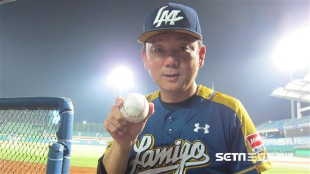
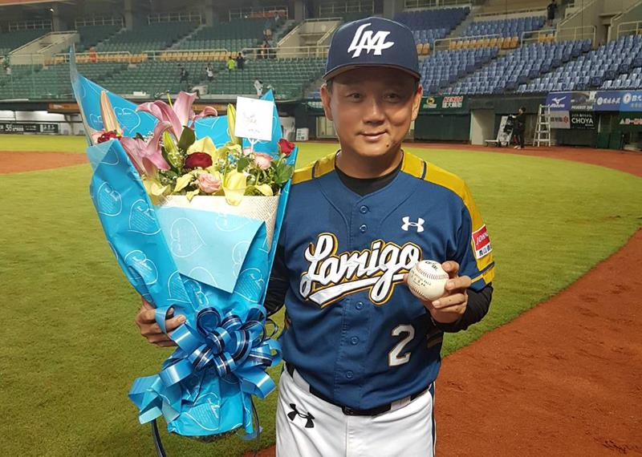

LAMIGO
總教練 洪一中
總教練歷史
金冠軍
總教練 洪一中

洪一中出生於1961年05月14日的高雄市，
是台灣的著名球員，在中華職棒成立初期，就隨兄弟象隊一同進入職棒。
洪一中在國小時期就接觸了棒球，而在之後更是加入了有名的美和中學青少棒、青棒隊，
分別於1976年、1979年代表台灣參加了第十六屆世界青少棒賽、第十二屆羅德岱堡青棒賽，
之後亦多次入選中華成棒代表隊國手
總教練歷史

2009年因部分La New熊隊球員涉及黑象事件而轉任二軍總教練，
與時任該職的蔡榮宗互換。2010年重返一軍回任總教練一職，
原二軍總教練則由郭建霖回任。因投手調度屢遭批評，
但野手調度卻常「神來一筆」而評價兩極，
2012年、2014年、2015年皆順利在台灣大賽獲勝奪下年度總冠軍，
2017年再度奪下年度總冠軍，正式超越前統一總教練呂文生拿下四次總冠軍的紀錄，
是目前中職史上「執教生涯擁有最多冠軍戒」的總教練。